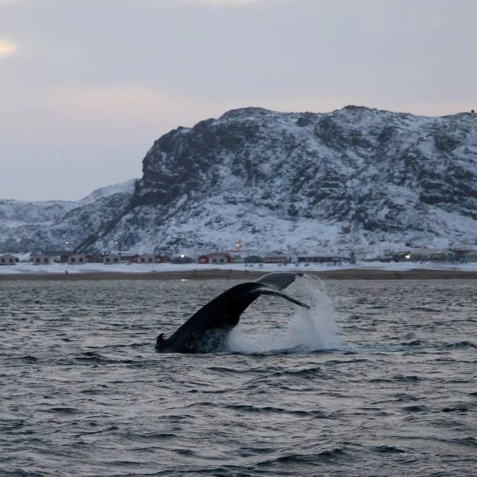

Туры и экскурсии по Мурманской области
и самым интересным местам Кольского Заполярья
Охота за Северным Сиянием, Териберка, Хибины,
хаски и северные олени
Мы коренные мурманчане с аттестацией. Хорошо знаем скрытые локации, логистику региона и специфику северной погоды.
Возьмем все заботы на себя, чтобы вы могли наслаждаться отдыхом и заряжаться энергией Крайнего Севера.
Работаем с мини-группами до 40+ человек. В нашем автопарке более 10 современных машин.
Мы рады принять вас на Кольском полуострове: северное сияние, Баренцево море, бескрайняя тундра и многое другое.
Кольский полуостров хорош круглый год, но у каждого чуда — свой сезон. Смотрите, что и когда можно застать, чтобы выбрать идеальное время для поездки.
Живые кадры из путешествий с Aurora Trip — киты, сияние, водопады и суровая красота Кольского полуострова. Выберите категорию и полистайте.
Реальные истории путешественников, побывавших с нами на Кольском полуострове. Без прикрас — только живые впечатления.
Статьи, гиды и советы от нашей команды — чтобы подготовиться к поездке и узнать Заполярье глубже.

Сезон с мая по сентябрь, каких китов и морских обитателей встречают в Баренцевом море, как проходит морская прогулка и сколько стоит тур из Мурманска.
Читать →В какие месяцы шанс увидеть Аврору выше всего, как работает Kp-индекс и почему важна облачность — объясняем просто.
Читать →Полный маршрут по посёлку — от кладбища кораблей до водопада и косы с видом на открытый океан. С картой и советами.
Читать →